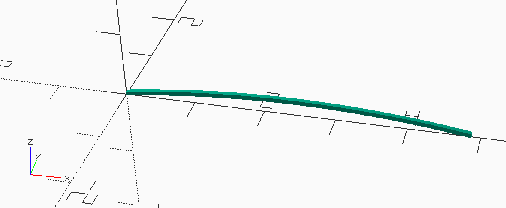

Read time: 0.7 minutes (71 words)
MMlpp Wing Center Ribs¶
The center section is constructed using simple circular arc airfoil sections. These ribs were formed by calculating the required radius, then constructing a 2D outline of the rib to ensure the leading and trailing edges match up with the spars. This is consistent with ribs cut using a template.
The 2D form was set up using a library file:
1//####################################
2// rib.scad - circle template rib
3// (c) 2021 by Roie R. Black
4//====================================
5$fn=360;
6module circle_template_rib(chord,camber,height,thickness) {
7
8 // calculate the radius for this arc
9 camber = chord * camber / 100;
10 radius = (chord * chord) / (8 * camber) + camber/2;
11 // generate the rib
12 translate([0,thickness/2,0])
13 rotate([90,0,0])
14 linear_extrude(height = thickness) {
15 intersection() {
16 difference() {
17 square([chord,1]);
18 translate([chord/2, -radius + camber]) circle(r=radius);
19 }
20 translate([chord/2, -radius + camber + height]) circle(r=radius);
21 }
22 }
23}
24//====================================
25// display this shape
26
27circle_template_rib(5,4,1/16,1/32);
28
29
Here is the code that generates a single rib:
wing/center/rib/rib.scad¶
1//###################################################
2// rib.scad
3// (c) 2021 - Roie R. Black
4//***************************************************
5include <../../wing_data.scad>
6
7use <MMlib/circle_template_rib.scad>
8
9module rib() {
10 circle_template_rib(rib_chord, rib_camber, spar_size, spar_size);
11}
12
13rib();
14
And here is a sample rib:
